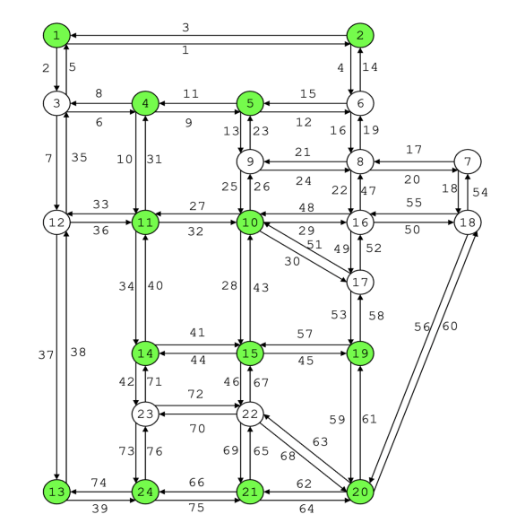

|
James Cheng I am a Master’s student in Computer Science at Stanford University. My interests include machine learning, reinforcement learning, and robotics, with a focus on building sample-efficient algorithms and sim-to-real transfer methods. I have also worked on projects in computer vision and large language models. I am developing decision making methods for embodied agents, with the goal of improving robustness, sample efficiency, and real-world applicability. |

|
ResearchI am developing decision making methods for embodied agents with emphasis on robustness, sample efficiency, and real-world applicability. |
|

|
Follower agnostic methods for Stackelberg games
Chinmay Maheshwari, James Cheng, S Shankar Sasty, Lillian Ratliff, Eric Mazumdar CDC, 2024 pdf / arXiv Methods for leader–follower (Stackelberg) games with follower-agnostic guarantees. |
|
Website template from Jon Barron, |